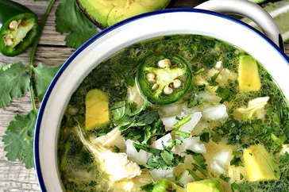

Chicken Soup

Description
Serve with warm tortilla chips and a nice large mojito. Top with sour cream or creme fraiche if desired.
Ingredients
- 2 skinless, boneless chicken breasts
- 1 tablespoon olive oil
- 1 large white onion, chopped, divided
- 3 limes, juiced
- 1 cup chopped cilantro, divided
- 2 jalapeno peppers, halved and thinly sliced
- 3 cloves garlic, minced
- 4 cups water
- 2 tablespoons reduced-sodium chicken bouillon powder
- 3 large firm-ripe avocados, cut into chunks
- ¼ cup crumbled queso fresco, or to taste
Steps
- Bring a small pot of water to a boil. Add chicken; boil until an instant-read thermometer inserted into the center reads at least 165 degrees F (74 degrees C), about 7 minutes. Drain.
- Run cool water over chicken to speed cooling process. Shred or finely slice chicken.
- Heat olive oil in a large pot over medium heat. Add 1/2 onion, lime juice, 1/2 cup cilantro, jalapeno peppers, and garlic until onion is slightly greenish in color, about 5 minutes.
- Combine 4 cups water and bouillon powder in a small bowl. Pour into the pot. Let cook until just heated through, about 5 minutes. Stir chicken into the pot.
- Ladle soup into 4 bowls. Top with remaining 1/2 onion, 1/2 cup cilantro, avocado, and queso fresco.